第九章 访问网络附加存储
目标：
- 使用NFS协议访问网络附加存储。
章节：
- 通过NFS挂载网络附加存储
- 自动挂载网络附加存储
第一节：通过NFS挂载网络附加存储
目标：
- 完成本节后，学生应该能：
- 识别NFS共享信息。
- 创建要用作挂载点的目录。
- 使用mount命令或通过配置/etc/fstab文件来挂载NFS共享。
- 使用umount命令卸载NFS共享。
- 借助新的nfsconf工具，配置NFS客户端以使用NFSv4。
挂载和卸载NFS共享：
- NFS（网络文件系统）是由Linux、UNIX及类似操作系统使用的互联网标准协议，可作为它们
的本地网络文件系统。
- 它是一种仍在积极增强的开放标准，可支持本地Linux权限和文件系统功能。
- RHEL 8中的默认NFS版本为 4.2。
- 支持 NFSv4 和 NFSv3 的主要版本。
- NFSv2 已不再受支持。
- NFSv4 仅使用 TCP 协议与服务器进行通信，较早的NFS版本可使用TCP或UDP。
- NFS服务器导出共享（目录）。
- NFS客户端将导出的共享挂载到本地挂载点（目录），该挂载点必须存在。
- 可以通过多种方式挂载NFS共享：
1. 使用mount命令手动挂载
2. 使用/etc/fstab条目在启动时自动挂载
3. 按需挂载：使用 autofs 服务或 systemd.automount 功能
* 注意：
1. NAS存储中使用的NFS协议示例：
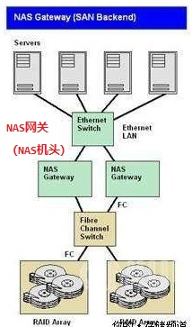 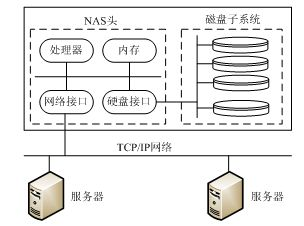
2. 常见的数据存储方式比较：DAS/NAS/SAN
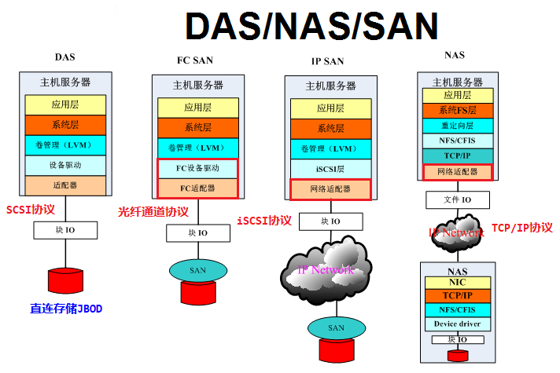
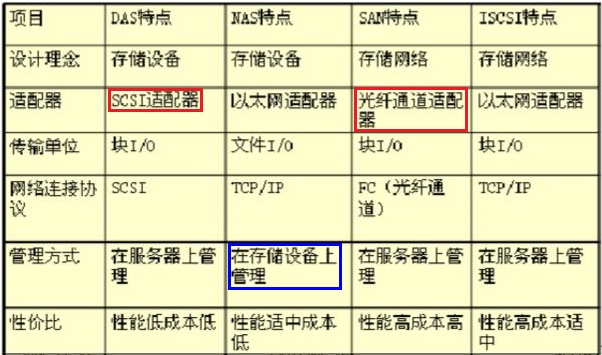
3. NFS客户端与服务端通信过程：RPC（远程过程调用）
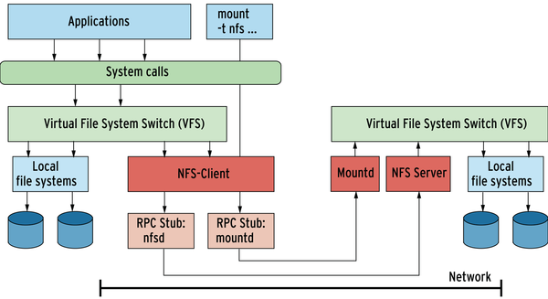
挂载NFS共享：
- 识别：NFS客户端管理员可以通过各种方式识别可用的NFS共享。
- 挂载点：使用mkdir命令在合适的位置创建挂载点。
- 挂载：NFS共享必须以root身份先进行挂载才可用。
1. 临时挂载：使用 mount 命令挂载NFS共享
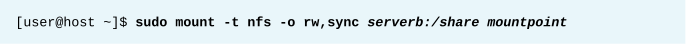
2. 永久挂载：编辑/etc/fstab文件以添加挂载条目

卸载NFS共享：
- 以root用户身份（或使用sudo），使用 umount 命令卸载NFS共享。

nfsconf工具：
- RHEL 8引入了 nfsconf 工具，用于管理 NFSv4 与 NFSv3 下的NFS客户端和服务器配置文件。
- nfsconf工具使用 /etc/nfs.conf（不再使用/etc/sysconfig/nfs）。
- /etc/nfs.conf由多个部分组成，开头是位于方括号中的关键字（[keyword]）。
- 对于NFS服务器，配置 [nfsd] 部分，由值的名称、等号和值组成，如 vers4.2=y。
- "#" 或 ";" 开头的行被注释。
- $ vim /etc/nfs.conf

- $ nfsconf --set <section> <key> <value>
# 设置指定部分中的键值对
$ nfsconf --get <section> <key>
# 查看指定部分中的键值

- $ nfsconf --unset <section> <key>
# 取消指定部分中的键值
配置一个仅使用NFSv4的客户端：
- 首先禁用 UDP 及与 NFSv2 和 NFSv3 有关的键。
$ nfsconf --set nfsd udp n
$ nfsconf --set nfsd vers2 n
$ nfsconf --set nfsd vers3 n
- 启用 TCP 和 NFSv4 相关的键。
$ nfsconf --set nfsd tcp y
$ nfsconf --set nfsd vers4 y
$ nfsconf --set nfsd vers4.0 y
$ nfsconf --set nfsd vers4.1 y
$ nfsconf --set nfsd vers4.2 y
- /etc/nfs.conf配置文件中会显示所做的更改。

* 注意：
1. $ man 8 mount.nfs：查看mount.nfs命令的使用方法
2. $ man 5 nfs.conf：查看NFS守护进程与工具配置
3. $ man 5 nfs：查看挂载NFS时使用的选项信息
4. NFSv4服务端与客户端showmount导出报错：
a. NFSv4服务端配置：
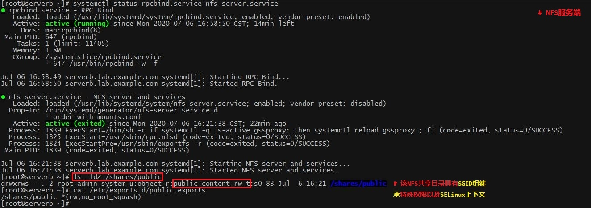

b. NFSv4服务端与客户端查看报错：服务端与客户端必须都有支持的NFS版本
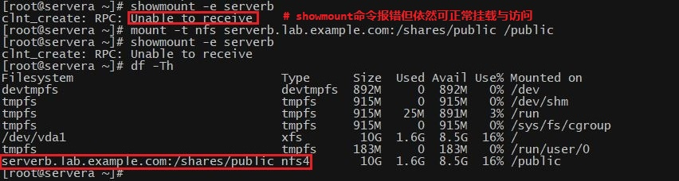
c. 报错原因：
showmount命令只能支持NFSv2与NFSv3版本，可同时开启NFSv3与v4的支持以使用该命令。

5. NFS客户端与服务端NFS协议不一致报错：
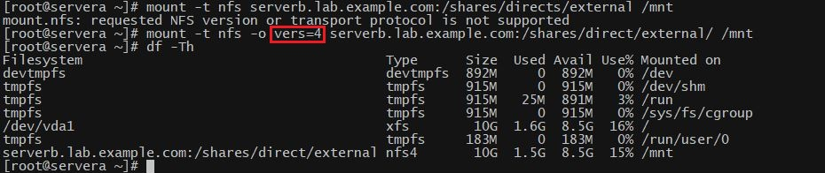
练习 P253：MANAGING NETWORK-ATTACHED STORAGE WITH NFS
第二节：自动挂载网络附加存储
目标：
- 完成本节后，学生应该能：
- 描述使用自动挂载器的优势。
- 使用直接映射和间接映射（包括通配符）自动挂载NFS共享。
使用自动挂载器挂载NFS共享：
- 自动挂载器是一个服务（autofs），它可以 “根据需要” 自动挂载NFS共享，并在不再使用
NFS共享时自动卸载这些共享。
- 自动挂载器的优势：
1. 无需root特权就可以运行mount和umount命令。
2. autofs中配置的NFS共享可供所有用户使用，受访问权限约束。
3. 不需要永久连接，可释放网络和系统资源。
4. autofs在客户端配置，无需在服务器端配置。
5. autofs与mount命令使用相同的选项，包括安全性选项。
6. autofs支持直接和间接挂载点映射。
7. autofs可创建和删除间接挂载点，从而避免了手动管理。
8. autofs默认网络文件系统是NFS，也可以自动挂载其他网络文件系统。
9. autofs是一种系统服务。
创建自动挂载：
- $ yum install -y autofs
# 安装autofs软件包
- 向 /etc/auto.master.d 添加一个主映射文件。
- 此文件用于确定挂载点的基础目录，并确定用于创建自动挂载的映射文件。

1. 主映射文件的名称是任意的，但为了让子系统能够识别，必须以 .autofs 作为扩展名。
2. 可以在一个主映射文件中放置多个条目。
3. 或者可以创建多个主映射文件，且每个文件的条目都进行逻辑分组。
4. 此条目将使用/shares目录作为间接自动挂载的基础目录。
5. /etc/auto.demo文件中包含挂载详细信息，需使用绝对文件名。
6. 需要在启动autofs服务之前创建 auto.demo 文件。

- 创建映射文件。
- 每个映射文件确定一组自动挂载的挂载点、挂载选项及挂载的源位置。
- 映射文件的命名规则：/etc/auto.<name>，其中 name 反映了映射内容。
- 条目的格式：挂载点、挂载选项、源位置。


1. 此示例显示基本的间接映射条目。
2. 本节稍后部分将讨论直接映射和使用通配符的间接映射。
3. 挂载点在 man page 中被称为 “密钥（key）”，它由autofs服务自动创建和删除。
4. 在此例中，完全限定挂载点是/shares/work（参阅主映射文件）。
5. autofs服务将根据需要创建和删除/shares目录和/shares/work目录。
6. 挂载选项以短划线字符（-）开头，并使用逗号分隔，不带空格。
7. 自动挂载时，可以使用相应的挂载选项来手动挂载文件系统。
8. 在此例中，自动挂载器将挂载具有读/写访问权限的共享内容（rw选项），并且在写入
操作期间服务器会立即同步（sync选项）。
9. 有用的自动挂载器特定选项包括：-fstype= 、-strict。
10. 使用 fstype 指定文件系统类型，如 nfs4 或 xfs。
11. 挂载文件系统时，使用 strict 可将错误视为严重。
12. NFS共享的源位置遵循 host:/pathname 模式，在此示例中为serverb:/shares/work。
13. 为了确保此次自动挂载成功，NFS服务器serverb必须以读/写访问权限导出目录，而请求
访问的用户必须对该目录具有标准Linux文件权限。
14. 若serverb以只读访问权限导出目录，那么客户端也仅获得只读访问权限，即使它要求读/写
访问权限。
- 启动并启用自动挂载器服务。

直接映射：direct maps
- 直接映射用于将NFS共享映射到现有的绝对路径挂载点。
- 主映射文件如下所示：

- 所有直接映射条目都使用 /- 作为基础目录。
- /etc/auto.direct文件的内容如下所示：

- 挂载点始终为绝对路径。
- 本例中autofs服务将自动创建和删除整个/mnt/docs目录。
间接通配符映射：indirect wildcard maps
- 当NFS服务器导出一个目录中的多个子目录时，可将自动挂载程序配置为使用单个映射条目访问
这些子目录其中的任何一个。
- 若serverb:/shares导出两个或多个子目录，并且能够使用相同的挂载选项访问这些子目录，
则/etc/auto.demo文件的内容如下所示：

- 挂载点（或密钥）是星号字符（*），而源位置上的子目录是 & 符号。
- 条目中的所有其他内容都相同。
- 当用户尝试访问/shares/work时，密钥 *（此例中为work）将代替源位置中的 & 符号，并
挂载serverb:/shares/work。
- 对于间接示例，autofs将自动创建和删除work目录。
* 注意：
1. autofs常用man手册：autofs、automount、auto.master
2. 客户端使用autofs自动挂载NFS：直接与间接映射
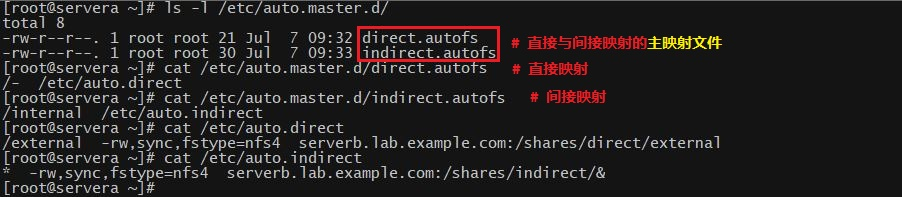
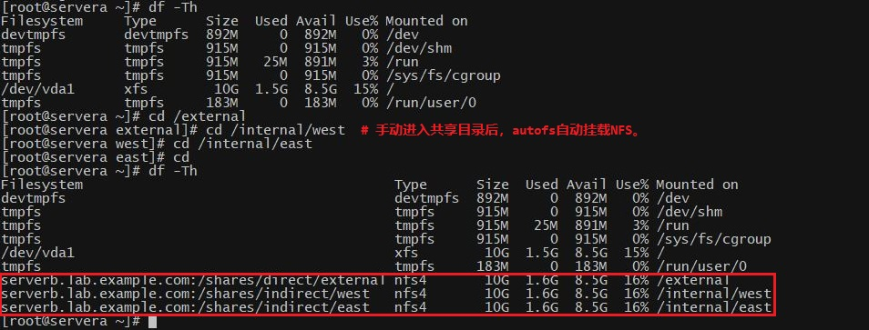
练习 P260：AUTOMOUNTING NETWORK-ATTACHED STORAGE
Lab P266：ACCESSING NETWORK-ATTACHED STORAGE